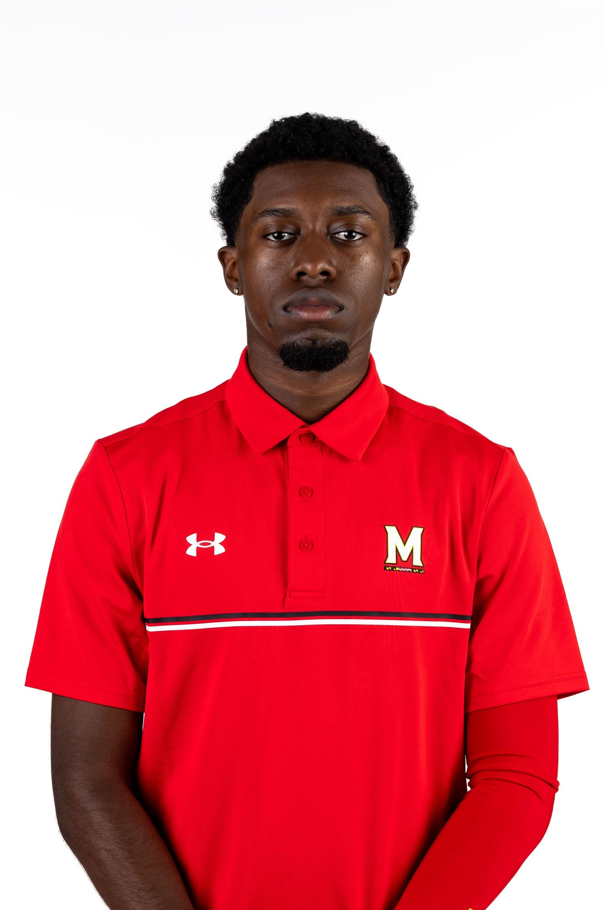

About Me

I’m an Arizona native with a deep passion for sports and storytelling, driven by the energy, competition, and teamwork that athletics bring. Growing up immersed in sports shaped not only my interests but also my approach to journalism, always seeking the human story behind the action.
Currently pursuing a Bachelor of Arts in Journalism at the University of Maryland, I have gained hands-on experience covering news, sports, and multimedia projects for outlets like The Black Explosion and The Precedent. My work focuses on clear, engaging reporting with attention to detail, accuracy, and AP style standards.
Outside of journalism, one thing I couldn’t live without is music, it inspires creativity, keeps me focused, and motivates me to push through deadlines. Whether it’s capturing the excitement of a game, the heart of a campus story, or everyday life, I strive to tell stories that resonate with readers and audiences.
Covering sports, campus news and athlete stories with clarity, energy and impact.